Kláštor Redemptoristov Podolínec
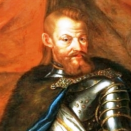
Narodenie Stanislava Ľubomirskeho
(1583-1649)
(1583-1649)
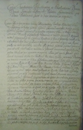
Zakladacia listina
(november 1642, Krakov)
(november 1642, Krakov)
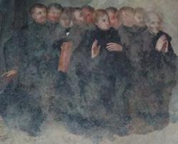
Prví piaristi v Podolínci
(december 1642)
(december 1642)
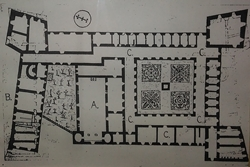
Začiatok stavebných prác
(1643)
(1643)
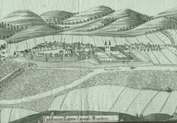
Piaristi v nových priestoroch
(1648)
(1648)
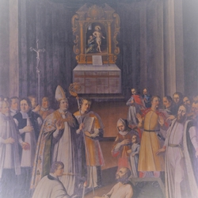
Posvätenie kostola sv. Stanislava
(1671)
(1671)
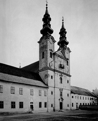
Stavebné úpravy kostola
(1762)
(1762)
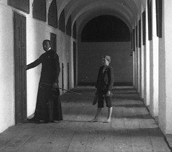
Piaristi odchádzajú z Podolínca
(30. august 1919)
(30. august 1919)
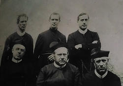
Redemptoristi v Podolínci
(23. máj 1922)
(23. máj 1922)
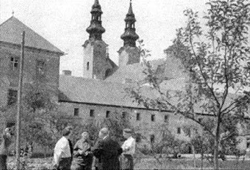
Odchod redemptoristov z Podolínca
(28. apríl 1927)
(28. apríl 1927)
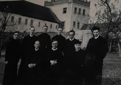
Návrat redemptoristov do Podolínca
(september 1940)
(september 1940)
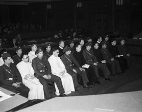
Akcia K - Barbarská noc
(z 13. na 14. apríla 1950)
(z 13. na 14. apríla 1950)
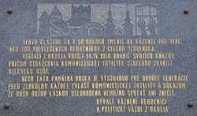
Zrušenie centralizačného tábora
(december 1951)
(december 1951)
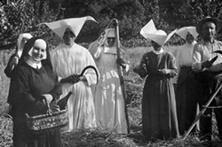
Charitný domov
(august 1956)
(august 1956)
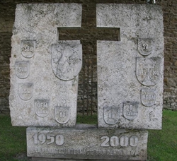
Sestry opúšťajú kláštor,
ktorý sa stáva štátnou školou
(december 1961)
ktorý sa stáva štátnou školou
(december 1961)
 Redemptoristi opäť v Podolínci
Redemptoristi opäť v Podolínci (28. január 1990)
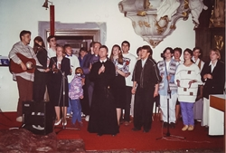
Spoločenstvo Rieka Života
(1993)
(1993)
Plan
Contact